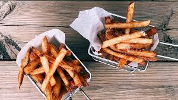

Delicious Pizza
Pizza, dish of Italian origin consisting of a flattened disk of bread dough topped with some combination of olive oil, oregano, tomato, olives, mozzarella or other cheese, and many other ingredients, baked quickly—usually, in a commercial setting, using a wood-fired oven heated to a very high temperature—and served hot ...

|

|
|---|---|
| Pizza | Pizza Time |
One of the simplest and most traditional pizzas is the Margherita, which is topped with tomatoes or tomato sauce, mozzarella, and basil. Popular legend relates that it was named for Queen Margherita, wife of Umberto I, who was said to have liked its mild fresh flavour and to have also noted that its topping colours—green, white, and red—were those of the Italian flag.
Tasty French Fires
French fries, also called chips, finger chips, fries, or French pommes frites, side dish or snack typically made from deep-fried potatoes that have been cut into various shapes, especially thin strips. Fries are often salted and served with other items, including ketchup, mayonnaise, or vinegar.
|
|
.jpg)
|
 |

|
|---|---|---|---|
| French Fries 1 | French Fries 2 | French Fries 3 | French Fries 4 |
The origin of french fries is uncertain. According to one tradition, they first appeared in France, where they were likely a snack sold by street peddlers. However, in more recent years Belgium has been cited as the birthplace. The source of the name is also disputed. One oft-repeated claim is that a U.S. soldier who tasted the dish while in the Belgian city of Namur during World War I coined the term.